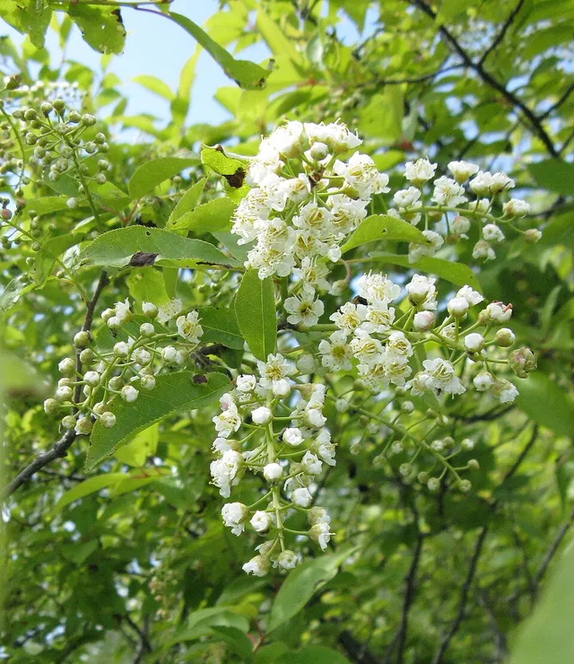

Chokecherry
Chokecherry is a wild fruit you can forage from August to September across the United States. Shrub with toothed leaves and hanging clusters of dark red to black cherries. Very astringent raw.

When is chokecherry in season in the United States?
Chokecherry is usually in season August to September. Timing shifts with weather, latitude and altitude.
Where does chokecherry grow in the United States?
Chokecherry grows across the United States. Regions: Northeast, Southeast, Midwest, Great Plains, Southwest, Rocky Mountains, Pacific Northwest, California, Alaska.
How do you recognise chokecherry?
Shrub with toothed leaves and hanging clusters of dark red to black cherries. Very astringent raw.
How do you harvest chokecherry?
Pick only fully ripe fruit that comes away easily, into a shallow container so it doesn't crush. Leave plenty on the plant for birds and wildlife.
How do you eat chokecherry?
Syrup, jelly, wine.
How do you store chokecherry?
Syrup or jelly.
What is chokecherry good for?
Vitamin C.
What can you cook with chokecherry?
- Chokecherry syrup soda: Chokecherry syrup with sparkling water, a Plains favourite.